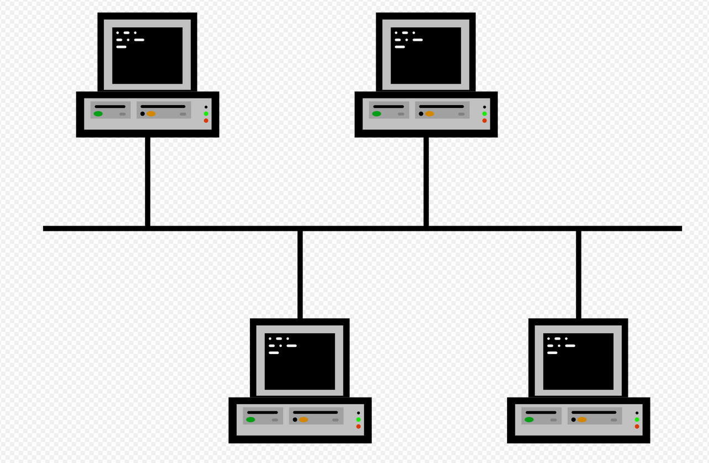
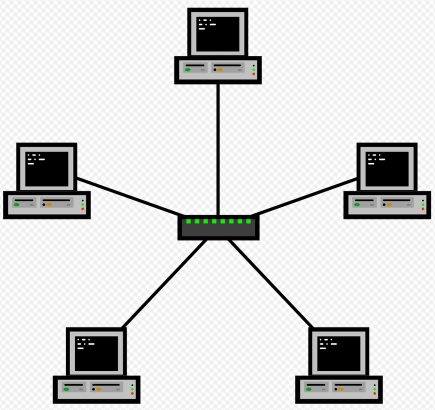
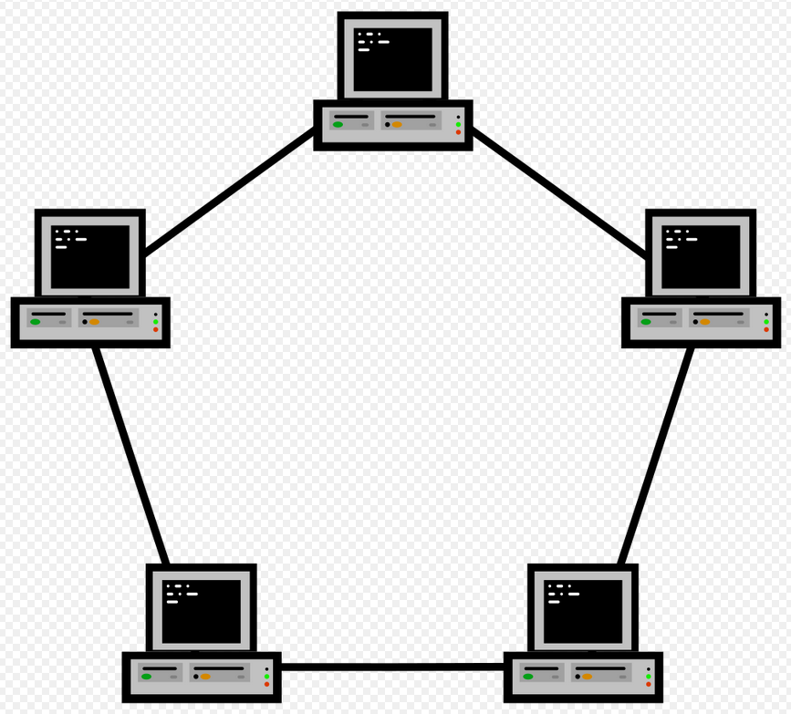
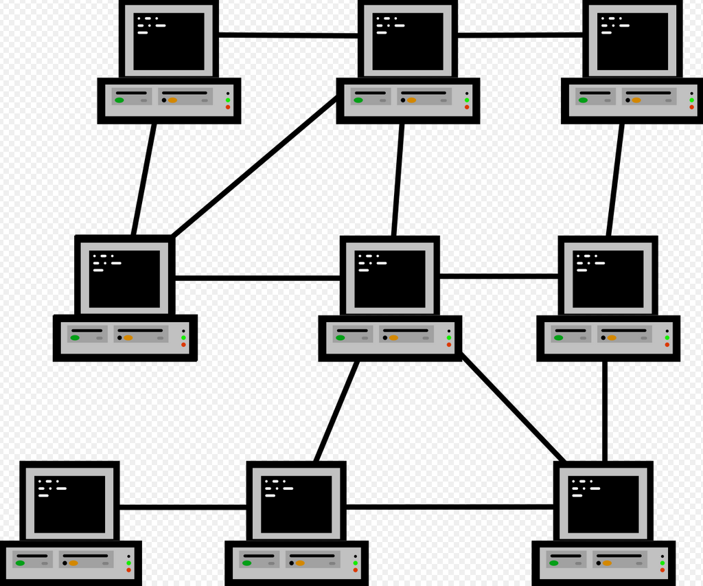
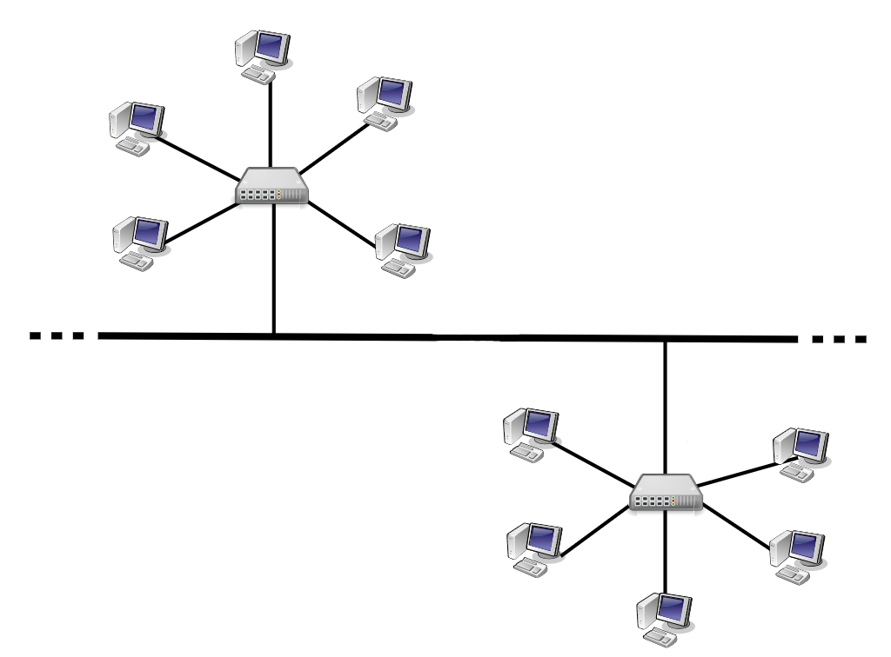

BytesOfProgress
Wiki
Network Topologies
Network topologies describe how the different elements like clients and switches are arranged in a computer network. They outline the layout of the network and explain how different nodes (such as computers, switches, and routers) are connected and communicate. Knowing about different network topologies is important for designing, troubleshooting, and optimizing networks. Here we will talk about the main types of network topologies.
Bus Topology
The bus topology is a linear network configuration where each device (node) is connected to a single central cable, called the bus or backbone. This central cable serves as a shared communication medium that carries data transmitted by any device on the network to all other devices.
The main backbone cable can be coaxial, twisted pair, or fiber optic, depending on the requirements and scale of the network. Devices such as computers, printers, and servers are connected to the bus via T-connectors or drop lines. Terminators are special devices attached at both ends of the bus to absorb signals and prevent them from reflecting back along the cable, which could cause data collisions.
When a device wants to send data, it places a data packet onto the bus. The data packet includes the destination address, ensuring that only the intended recipient processes the data.
The data travels in both directions along the bus until it reaches both ends or is absorbed by the terminators. Each device on the bus checks the destination address and processes the data if the address matches.
Since all devices share the same communication medium, data collisions can occur when two devices transmit simultaneously. Ethernet-based bus topologies use Carrier Sense Multiple Access with Collision Detection (CSMA/CD) to manage collisions: Devices listen to the bus before sending data. If the bus is busy, devices wait for a random time before attempting to transmit again.
One of the primary benefits of bus topology is its simple installation. The simple layout involves minimal cabling, making it easy to set up and extend by adding more devices to the central cable. This simplicity also contributes to its low cost, as it requires less cabling compared to more complex topologies like star or mesh. Fewer network hardware components such as hubs or switches are needed. The bus topology is ideal for small networks, working well in environments with a limited number of devices. It is particularly suitable for temporary or small-scale network setups, where quick and easy installation is a priority.
The bus topology also has notable disadvantages. One major limitation is scalability. It is effective only for small networks due to issues like for example timing problems. As more devices are added, network performance degrades, increasing the chance of data collisions. Another significant issue is the single point of failure: the central bus cable. If this backbone fails, the entire network is broken. Troubleshooting can also be challenging, as it is difficult to identify and fix problems. Any break or problem in the bus impacts the entire network. The bus topology can also experience performance bottlenecks. The shared communication medium limits bandwidth, and high traffic volumes lead to more data collisions, resulting in reduced data transfer speeds.
Star Topology
The star topology is a network configuration where each device is connected to a central hub or switch. This central hub serves as the focal point of communication, relaying data between the connected devices. In this setup, devices are connected to the central hub via individual cables, which can be coaxial, twisted pair, or fiber optic, depending on the network. When a device wants to send data, it transmits the data packet to the central hub. The hub then forwards the data packet to the destination device. Data travels from the sending device to the hub, which manages and directs the data packets to the right device. This central hub effectively manages data traffic, reducing collisions by controlling the data flow and ensuring that data packets are routed correctly.
One of the primary benefits of the star topology is its simple installation. The simple layout involves connecting each device to a central hub, making it easy to set up and extend by adding more devices. The star topology is ideal for small to medium-sized networks, working well in environments with a limited number of devices. It is particularly suitable for temporary or small-scale network setups where quick and easy installation is a priority.
The star topology also has disadvantages. One major limitation is the single point of failure: the central hub. If this hub fails, the entire network is disrupted. Troubleshooting can be difficult, as the failure of the hub affects the entire network. However, identifying and isolating problems in individual cables is easier compared to other topologies like the bus. Performance bottlenecks can happen if the central hub becomes overloaded with data traffic, leading to reduced data transfer speeds.
Ring Topology
The ring topology is a network configuration where each device is connected to exactly two other devices, forming a closed ring. This setup allows data to travel in a unidirectional or bidirectional circular path, ensuring that each device acts as a repeater to pass the data to the next device in the ring. Devices are connected in a circular loop using dedicated cables which can be coaxial, twisted pair, or fiber optic.
When a device wants to send data, it transmits the data packet to its neighbor. The packet then travels from one device to the next in the ring until it reaches its destination. Each device checks the destination address of the data packet and forwards it along the ring until the correct device receives it. This process continues seamlessly, maintaining efficient data flow within the network.
One of the primary benefits of ring topology is its ability to handle high volumes of data traffic efficiently. Since each device retransmits the data, signal degradation is minimal, allowing the network to cover larger distances. Additionally, data packets travel in a predetermined direction, reducing the chance of collisions. The ring topology also simplifies network management, as each device only needs to manage connections with its two immediate neighbors.
The ring topology has, of course, disadvantages. One major limitation is the network's vulnerability to a single point of failure. If any device or cable in the ring fails, the entire network can be disrupted. Troubleshooting can also be difficult, as identifying problems requires checking every device and connection in the ring. Adding or removing devices can also be complex and may require temporarily breaking the ring, which disrupts network communication.
Mesh Topology
Mesh topology is a network configuration where each device is directly connected to every other device in the network, forming a fully interconnected mesh of point-to-point links. This structure creates multiple paths for data transmission, offering high reliability, fault tolerance, and robust performance.
In the mesh topology, each device has a direct connection to every other device, either through wired (such as Ethernet cables) or wireless (like Wi-Fi connections) links. This redundancy ensures that if one link or node fails, data can automatically be rerouted through alternative paths, keeping the communication uninterrupted. When a device initiates data transmission, it can select the most efficient path available at that moment, optimizing efficiency.
The primary advantage of mesh topology is its high reliability. The multiple interconnected paths minimize the risk of network downtime due to link or node failures. This fault tolerance makes mesh topology suitable for critical applications where uninterrupted operation is essential.
The mesh topology supports high scalability and performance. The direct point-to-point connections eliminate data collisions that can occur in shared media topologies like bus or ring. This setup can handle high data transmission rates and increased network traffic by simply adding more links or nodes if the load becomes too much.
The mesh topology also introduces difficulties. The implementation requires significantly more resources, as each device needs to establish and maintain multiple connections. The extensive cabling and hardware required can result in much higher costs compared to other topologies. Additionally, the complexity of network design and management increases with the number of devices and connections, requiring careful planning and maintenance to ensure optimal performance.
Hybrid Topologies
The hybrid topology is a network configuration that combines two or more different types of topologies into a single network. By integrating various topologies, hybrid networks can leverage the strengths of each topology while lowering their individual weaknesses, offering flexibility and scalability needed for specific network requirements.
In this example, it is a star-bus topology: Combining two star topologies in a bus topology.
back